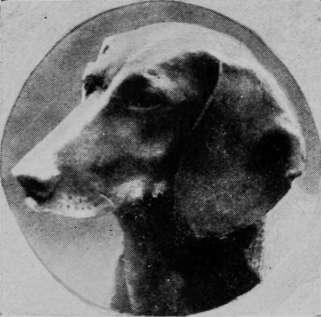
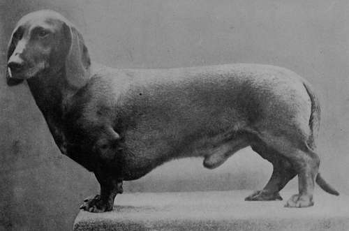
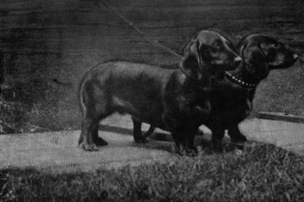
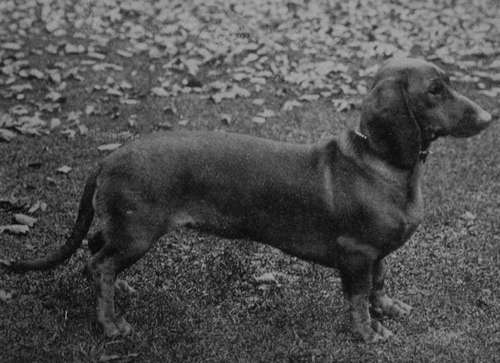

Chapter XI. The Dachshund
Description
This section is from the book "Sporting Dogs. Their Points And Management In Health, And Disease", by Frank Townend Barton. Also available from Amazon: Sporting Dogs; Their Points and Management in Health and Disease.
Chapter XI. The Dachshund
Like many other varieties of the dog, the origin of the Dachshund seems to be involved in obscurity, though there are fairly reasonable grounds for concluding that the home of the Dachshund is Germany, where the terrier-like type is that cultivated, the Hound characteristics of the breed having become largely developed through the English system of breeding.
To anyone unacquainted with this breed of dog in his own country, the Hound features are the most striking, in fact, so overshadow anything of the Terrier element as to completely obscure it.
Some few years since the Dachshund was an exceedingly fashionable variety of dog, chiefly as a lady's companion.
Dachshund Champion Snakes Prince Property of Mr de Boinville).
A Brace of Typical Dachshunds (Property of Mr de Boinville).
Dachshund Dog and Bitch (Property of Mrs Gerald Spencer).
Red Dachshund Victoria Regina (Property of Miss Blackoe).
Latterly he seems to have been displaced by the Pomeranian, Pekinese, and Japanese Spaniels. This brings us back to the adage that " every dog has his day." So with the Dachshund, yet the classes at the London shows are always well filled. The Terrier-type of Hound is usually smaller and built upon lighter lines. The legs are not so crooked, the head shorter, so are the ears.
In weight they are from 10 to 16 lbs. or thereabout.
The so-called Toy Dachshund or Spiel Dachs are a diminutive production of the smallest Terrier-type of the variety, but not specially sought after, at least in this country.
In England Dachshunds are but rarely used for sporting purposes, but in Germany they are largely employed for hunting the fox in his home.
These little dogs can go into the earth after any fox, and are not long in giving tongue when Reynard is in the ground, and if several of these little dogs are at work on one fox they are not long in causing him to bolt, or settle the dispute by underground combat. With the badger—always a formidable antagonist— these little dogs are said to be equally game, usually fighting to a finish. A few sportsmen have made use of Dachshunds for driving rabbits out of cover, but they have no particular qualification in this respect, and are decidedly inferior to the Beagle, or a pack of Beagles for this purpose.
It is a variety of dog not the easiest to rear, distemper being, as in most other breeds, accountable for the high mortality amongst them.
The colour of Dachshunds varies considerably, but the chief ones are, deep red, chocolate and tan, fallow-red, black-and-tan, and dapple.
White on the body is objectionable, less so on the feet.
The so-called " Tiger Dachs," or steel-blue and tan-colour is uncommon, though it gives the animal a very handsome appearance. At the London Kennel Club shows there is a class for dappled dogs and bitches. As a rule, the crossing of a black-and-tan Dachs with a red one, produces puppies true to type, i.e., some are black and tan, others red, and not a mixture of these two colours. A red dog and bitch, will, however, sometimes throw a black-and-tan puppy; or a black-and-tan sire and dam produce a whole-red puppy. This is precisely what happens with certain other varieties.
There are really three varieties of coat, viz.:— (a) The Smooth. (6) The Rough, (c) Wire-haired.
The coat should be short and thick and the skin remarkably loose—a characteristic feature of the breed, and one that undoubtedly affords the animal a degree of protection during combat.
Head
This is distinctly wedge-shaped and large in proportion to the size of the animal. Jaws strong.
Nose
black or Dudley (flesh) coloured. A red dog may have a black nose.
Eyes
Well apart, with brown or black iris.
Ears
These ought to be long, thin, covered by silky short hair and free from scales.
Neck
Short and thick.
Chest
Wide and deep, almost touching ground.
Shoulders
The shoulders are very prominent and heavily clad with muscle, giving the dog a square appearance in front. A long body and well-rounded ribs are essentials.
Legs, Feet And Toes
Most important. The forearm should be short and thick, running inwards so as to form almost right angles with the parts below. At the wrists or knees the parts touch each other and almost immediately bend outwards (splay-feet), as long, flat paws. These latter ought to be large and shovel-shaped, bearing long, strong, slightly-hooked claws of a black or brown colour, a white claw (as in Pugs) being objectionable. The more the " crook" the better. This, with well-rounded ribs and a long body, constitutes one of the chief points in a Dachshund, giving it a well-let-down appearance, but not too low.
Hind Quarters
Strength in this region is of great importance, the croup being well-rounded and the thighs strong. The loins must be well arched. The tail thick and tapering, and carried like that of the Foxhound under excitement. It must not curl over the back, this being one of the worst faults a Dachshund can have.
From 17 to 22 lbs. is the average weight of dogs in fair condition.
The Dachshund Club, and the Northern Dachshund Association, are the two principal societies, in this country, presiding over the interests of the breed.
The service of A1 stud dogs can be had at fees from two to four guineas, and excellent youngsters obtained from three to ten or twelve guineas.
Continue to:
- prev: The Beagle
- Table of Contents
- next: The Basset Hound